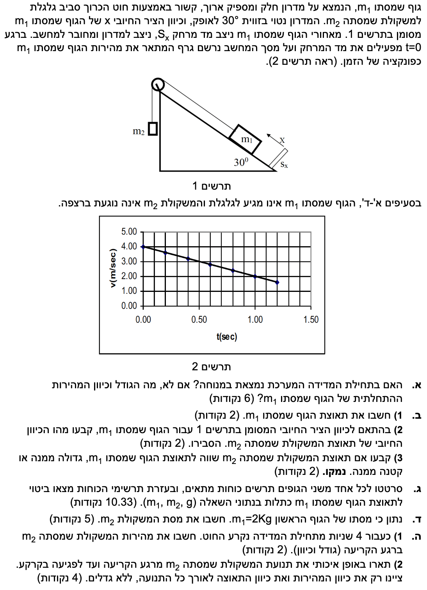
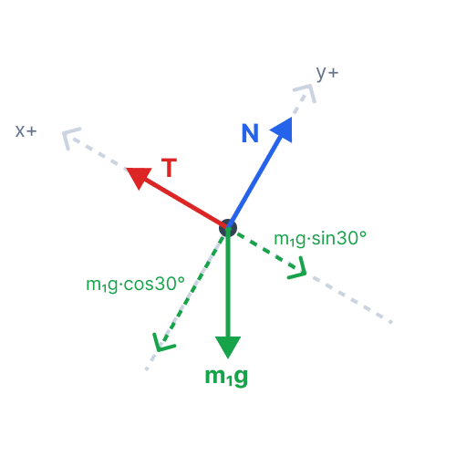
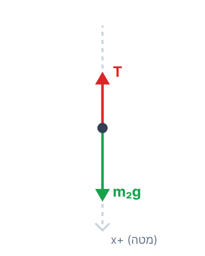

פתרון שאלת בגרות - מכניקה (דינמיקה)
מתכונת מכניקה 2
פתרון מודרך, צעד-אחר-צעד, לבעיית גופים קשורים על מדרון נטוי.
עודכן:
--- --:--:--

[תמונת השאלה המקורית]
לא נמצאה תמונה בשם question-image.png באותה תיקייה.
מה נתון: מתרשים 2, שהוא גרף המהירות כתלות בזמן, אנו קוראים את המהירות ברגע \( t=0 \). המהירות ההתחלתית היא \( v(0) = 4 \text{ m/s} \).
מה מחפשים: לקבוע האם המערכת במנוחה בתחילת המדידה (\( t=0 \)). אם לא, מה גודל וכיוון המהירות ההתחלתית של גוף \( m_1 \).
נוסחאות ועקרונות בשימוש:
קריאת נתונים מגרף
פתרון צעד-אחר-צעד:
הכיוון נקבע לפי הסימן של המהירות בהתאם לציר שבחרו בשאלה (ציר \( x \) חיובי במעלה המדרון).
מכיוון שערך המהירות ב- \( t=0 \) אינו אפס, המערכת אינה במנוחה. גודל המהירות הוא \( 4 \text{ m/s} \). מכיוון שהערך חיובי, כיוון המהירות הוא בכיוון החיובי של ציר ה- \( x \), כלומר במעלה המדרון.
המערכת אינה במנוחה בתחילת המדידה. המהירות ההתחלתית של גוף \( m_1 \) היא בגודל של \( 4 \text{ m/s} \) וכיוונה כלפי מעלה לאורך המדרון (הכיוון החיובי של ציר \( x \)).
טיפ מורה:
תמיד חשוב לבדוק את נקודת החיתוך עם ציר ה-y (ציר המהירות) כדי לדעת את המהירות ההתחלתית. הסימן של המהירות (פלוס או מינוס) מספר לנו על כיוון התנועה ביחס לציר שהוגדר.
כלל ברזל שכדאי לזכור בניתוח גרף מהירות-זמן:
• שיפוע הגרף (עד כמה הקו "תלול") מייצג את תאוצת הגוף (קצב שינוי המהירות).
• השטח הכלוא בין הקו לבין ציר הזמן (הציר האופקי) מייצג את ההעתק, כלומר איזה מרחק הגוף עבר ובאיזה כיוון (שטח מעל הציר הוא התקדמות חיובית, ושטח מתחתיו הוא התקדמות שלילית).
מה נתון: גרף מהירות-זמן של גוף \( m_1 \) (תרשים 2). הגרף הוא קו ישר, לכן התאוצה קבועה. שתי נקודות על הגרף לחישוב שיפוע (לדוגמה): \( (t_1, v_1) = (0, 4) \) ו- \( (t_2, v_2) = (1, 2) \). (היחידות הן שניות ומטרים לשנייה בהתאמה).
מה מחפשים: 1. את תאוצת הגוף \( m_1 \). 2. את הכיוון החיובי המתאים עבור המשקולת \( m_2 \). 3. האם תאוצת המשקולת \( m_2 \) שווה, גדולה או קטנה מתאוצת \( m_1 \).
נוסחאות ועקרונות בשימוש:
\( a = \frac{\Delta v}{\Delta t} \)
אילוץ קינמטי בחוט מתוח
חישוב צעד-אחר-צעד:
1. חישוב תאוצת גוף \( m_1 \)
התאוצה היא שיפוע גרף מהירות-זמן. נציב את הנקודות שבחרנו:
\[ a_1 = \frac{\Delta v}{\Delta t} = \frac{v_2 - v_1}{t_2 - t_1} = \frac{2 - 4}{1 - 0} = -2 \text{ m/s}^2 \]
2. כיוון ציר חיובי ל-\( m_2 \)
ציר ה- \( x \) של \( m_1 \) מוגדר כלפי מעלה המדרון. תנועה בכיוון זה גורמת לגוף \( m_2 \) לרדת למטה (כי החוט מושך אותו). לכן, כדי לשמור על עקביות של "מערכת", אם עלייה של \( m_1 \) היא כיוון חיובי, אז ירידה של \( m_2 \) חייבת להיות הכיוון החיובי שלו.
3. קשר בין התאוצות
הגופים קשורים בחוט אידיאלי שאינו נמתח ואינו רפוי במהלך התנועה (כפי שנתון שהחוט מתוח). לכן, על כל מטר ש- \( m_1 \) עובר, גם \( m_2 \) עובר מטר. מכאן שגודל התאוצות שלהם חייב להיות שווה. בגלל שבחרנו צירים תואמים, גם הסימן של התאוצה יהיה זהה (תאוצה של \( -2 \text{ m/s}^2 \) עבור שני הגופים במערכות הצירים שלהם).
1) תאוצת הגוף \( m_1 \) היא \( -2 \text{ m/s}^2 \).
2) הכיוון החיובי של \( m_2 \) הוא כלפי מטה.
3) תאוצת המשקולת \( m_2 \) שווה לתאוצת הגוף \( m_1 \) משום שהם קשורים בחוט מתוח.
טיפ מורה: תמיד כדאי להגדיר "כיוון חיובי של המערכת" שעוקב אחרי החוט. אם \( m_1 \) זז פלוס \( 1\text{m} \), לאן \( m_2 \) זז? הכיוון הזה יהיה הפלוס של \( m_2 \). זה ימנע בלבול של סימנים כשנחבר משוואות כוחות מאוחר יותר.
מה נתון: מסה \( m_1 \), מסה \( m_2 \), זווית המדרון \( \alpha = 30^\circ \), תאוצת הכובד \( g \), המדרון חלק (אין חיכוך, \( f=0 \) ). החוט אידיאלי (מתיחות \( T \), גלגלת אידיאלית).
מה מחפשים: תרשימי כוחות לכל גוף בנפרד (FBD), וביטוי לתאוצת הגוף \( m_1 \) כפונקציה של הנתונים בלבד.
נוסחאות ועקרונות בשימוש:
\( \Sigma F = ma \)
\( W = mg \)
רכיבי מדרון משופע
פתרון צעד-אחר-צעד:
תרשימי כוחות (FBD)
גוף \( m_1 \)

גוף \( m_2 \)

משוואות התנועה
נרשום את החוק השני של ניוטון עבור כל גוף בנפרד (בכיוון התנועה בלבד, ציר x כפי שהוגדר לכל גוף).
עבור גוף \( m_1 \) (חיובי במעלה המדרון):
\[ (1)\quad \Sigma F_{x1} = m_1 a \Rightarrow T - m_1 g \sin(30^\circ) = m_1 a \]
עבור גוף \( m_2 \) (חיובי כלפי מטה):
\[ (2)\quad \Sigma F_{x2} = m_2 a \Rightarrow m_2 g - T = m_2 a \]
נחבר את שתי המשוואות (1) ו- (2) כדי לבודד את התאוצה \( a \) (הכוח הפנימי \( T \) מתבטל):
\[ (T - m_1 g \sin(30^\circ)) + (m_2 g - T) = m_1 a + m_2 a \]
\[ m_2 g - m_1 g \sin(30^\circ) = a (m_1 + m_2) \]
\[ a = \frac{g (m_2 - m_1 \sin(30^\circ))}{m_1 + m_2} \]
ביטוי התאוצה הוא: \( a = \frac{g (m_2 - m_1 \sin(30^\circ))}{m_1 + m_2} \)
טיפ מורה: כשמבקשים "למצוא ביטוי", הכוונה היא להגיע למשוואה שבה הנעלם (התאוצה) מבודד בצד אחד, ובצד השני מופיעים אך ורק גדלים שצוינו בפירוש כ"נתונים" בטקסט השאלה (כמו המסות ו-g). המתיחות T אינה נתונה בשאלה, ולכן פתרנו את מערכת המשוואות כך שהיא לא תופיע בביטוי הסופי. שימו לב: המתיחות לא התבטלה פיזיקלית חלילה, פשוט "העלמנו" אותה אלגברית מתוך התשובה שלנו כדי לעמוד בדרישות הסעיף.
מה נתון: \( m_1 = 2 \text{ kg} \), תאוצת המערכת \( a = -2 \text{ m/s}^2 \), תאוצת הכובד \( g = 10 \text{ m/s}^2 \), וזווית המדרון \( \alpha = 30^\circ \) (כלומר \( \sin(30^\circ) = 0.5 \)).
מה מחפשים: למצוא את הערך המספרי של המסה \( m_2 \).
נוסחאות ועקרונות בשימוש:
הביטוי לתאוצה מסעיף ג'
חישוב:
ניקח את הביטוי מסעיף ג' ונציב בו את הנתונים המספריים:
\[ a = \frac{g (m_2 - m_1 \sin(30^\circ))}{m_1 + m_2} \]
\[ -2 = \frac{10 \cdot (m_2 - 2 \cdot 0.5)}{2 + m_2} \]
\[ -2 = \frac{10 \cdot (m_2 - 1)}{2 + m_2} \]
נכפול את שני האגפים במכנה \( (2 + m_2) \):
\[ -2(2 + m_2) = 10m_2 - 10 \]
\[ -4 - 2m_2 = 10m_2 - 10 \]
נעביר אגפים (נעביר את ה- \( m_2 \) לצד ימין ואת המספרים לשמאל):
\[ 10 - 4 = 10m_2 + 2m_2 \]
\[ 6 = 12m_2 \]
\[ m_2 = \frac{6}{12} = 0.5 \text{ kg} \]
מסת המשקולת השנייה היא \( m_2 = 0.500 \text{ kg} \).
טיפ מורה: זה השלב שבו בחירת הצירים מהסעיפים הראשונים משתלמת. אם היינו מציבים בטעות \( a = +2 \), היינו מקבלים מסה שלילית, שזה כמובן בלתי אפשרי בפיזיקה קלאסית!
מה נתון: רגע קריעת החוט: \( t = 4 \text{ s} \). לפי חישוב, המהירות ברגע זה היא \( v(4) = 4 + (-2) \cdot 4 = -4 \text{ m/s} \).
מה מחפשים: 1) את מהירות המשקולת \( m_2 \) ברגע הקריעה (גודל וכיוון). 2) תיאור איכותי של תנועת \( m_2 \) מרגע הקריעה ועד הפגיעה בקרקע.
נוסחאות ועקרונות בשימוש:
\( v = v_0 + at \)
נפילה חופשית (תאוצה \(= g\))
פתרון צעד-אחר-צעד:
1. המהירות ברגע הקריעה
ברגע \( t=4\text{s} \) גודל המהירות של המערכת הוא \( |-4| = 4 \text{ m/s} \). לגוף \( m_1 \) המהירות שלילית, כלומר במורד המדרון. כדי ש- \( m_1 \) ינוע במורד המדרון, החוט מושך את \( m_2 \) כלפי מעלה.
2. תיאור תנועת \( m_2 \) לאחר הקריעה
ברגע קריעת החוט, גוף \( m_2 \) מנותק ונמצא תחת השפעת כוח הכובד בלבד (נפילה חופשית). לכן, התאוצה שלו מרגע זה היא תאוצת הכובד, וכיוונה כלפי מטה. התנועה תתחלק לשני שלבים:
שלב ראשון: המהירות מכוונת כלפי מעלה, אך התאוצה היא כלפי מטה. לכן, גודל המהירות קטן עד שהגוף מגיע לשיא הגובה ונעצר רגעית.
שלב שני: הגוף נופל כלפי מטה. כעת המהירות מכוונת כלפי מטה וגם התאוצה היא כלפי מטה. לכן, גודל המהירות גדל עד פגיעתו בקרקע.
1) מהירות המשקולת \( m_2 \) ברגע הקריעה היא בגודל \( 4.00 \text{ m/s} \) וכיוונה כלפי מעלה.
2) לאורך כל התנועה מרגע הקריעה, תאוצת המשקולת היא כלפי מטה. תחילה היא עולה וגודל מהירותה קטן, נעצרת רגעית, ולאחר מכן יורדת וגודל מהירותה גדל.
טיפ מורה: זה סעיף שדורש דמיון פיזיקלי. הרבה תלמידים טועים וחושבים שכשהחוט נקרע הגוף ישר נופל למטה. חשוב לזכור שלגוף יש התמדה (אינרציה). הייתה לו מהירות כלפי מעלה ברגע הקריעה, והוא לא "שוכח" אותה מיד.